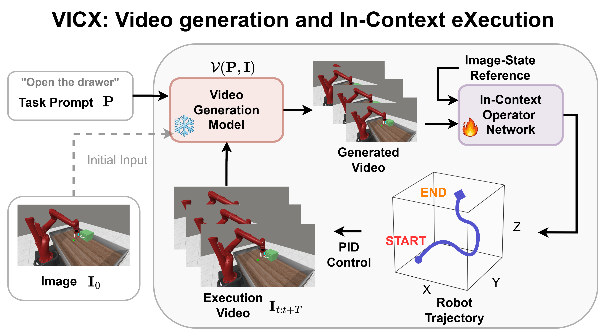
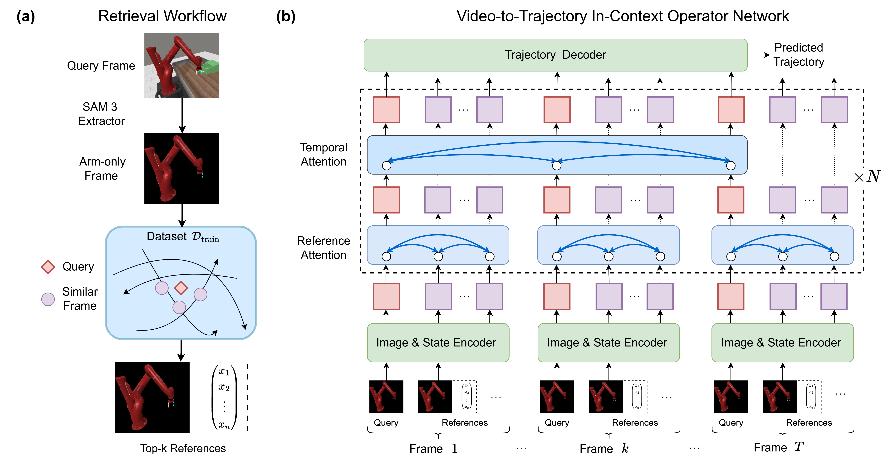
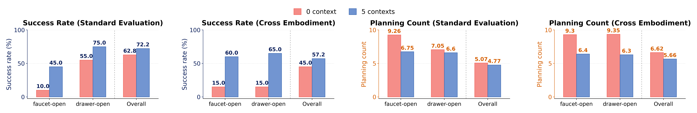
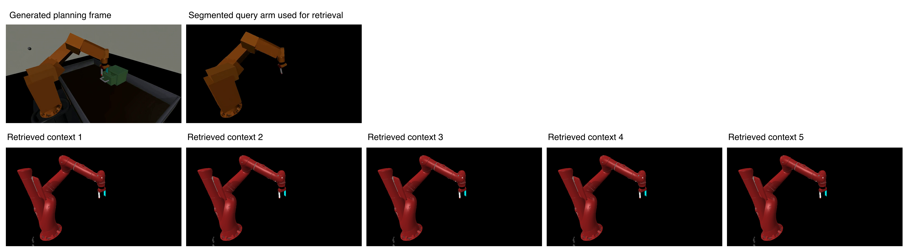
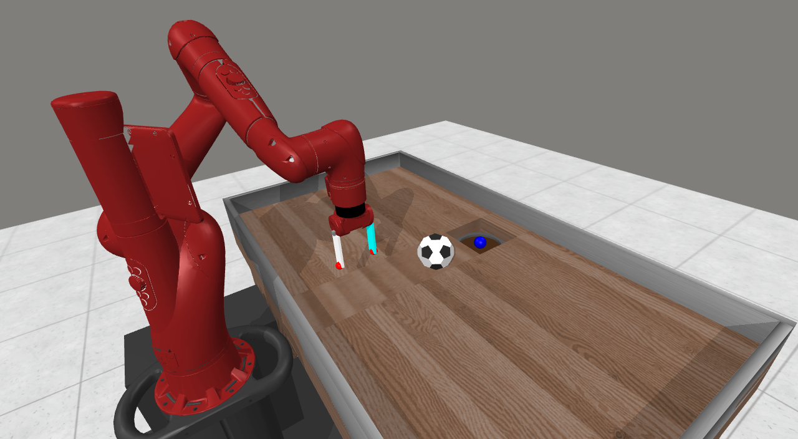

Generalizable robot manipulation requires not only task-level reasoning over unseen scenes, but also reliable grounding of visual plans into embodiment-specific execution. To bridge this gap, we propose VICX (Video generation and In-Context eXecution), a decoupled closed-loop manipulation framework. In VICX, a frozen video generation model produces vision-language-conditioned high-level visual plans, while a Video-to-Trajectory In-Context Operator Network (V2T-ICON) serves as the task-agnostic interface that grounds these plans into executable robot-state trajectories. To improve execution generalization, V2T-ICON operates on segmentation-extracted arm-only frame observations and uses retrieved image-state pairs as in-context prompts, allowing a robust and generalizable visual-to-state mapping at inference time without parameter updates. Experiments on Meta-World show that VICX supports cross-task generalization, closed-loop self-correction, and cross-embodiment transfer, demonstrating dual generalization across both task semantics and robot execution.
The videos below include representative closed-loop successes and failure cases from the demo package; tasks with 100% success omit failure examples. The quantitative cards use the paper's 20-seed evaluation protocol. If a task displays fewer than four videos, the available examples are either all successful or all failed. Closed-loop feedback lets the video planner treat failed or incomplete execution as new visual context. In later planning cycles, the system can adapt its strategy rather than repeating the same unsuccessful motion.
VICX separates high-level visual planning from low-level execution grounding. Given the current observation and a task prompt, a frozen image-conditioned video model predicts a short-horizon future video. V2T-ICON then translates the generated arm motion into robot states by comparing each query frame with retrieved image-state references. After execution, the latest observation is fed back for the next planning cycle, enabling closed-loop replanning and self-correction.

The paper reports closed-loop evaluation over 20 random seeds per task on nine Meta-World tasks. V2T-ICON is trained on only three source tasks and evaluated with a frozen Wan video planner, five retrieved references per query frame, and a ten-cycle replanning budget.
Algorithm 1: VICX via video generation and V2T-ICON
Input: task prompt P, initial observation I0, planning budget C, reference count N, arm-only training pool Dtrain, and optional external planned video Qext.
Output: generated videos, executable state trajectories, and success flag y.
Notation: V is the frozen video agent, Gθ is V2T-ICON, S is the arm-only segmentation operator, Q is a planned video, R is the retrieved reference context, and X̂ is the predicted executable state trajectory.
Retrieved references improve both task success and planning efficiency. The canonical benchmark improves from 62.8% to 72.2% success, while the cross-embodiment benchmark improves from 45.0% to 57.2% success.

V2T-ICON is trained on standard red Sawyer-style arm demonstrations and evaluated without retraining on a shifted orange industrial-style arm with modified tabletop, floor texture, and lighting. With five retrieved references, the system maintains 57.2% overall success under this visual embodiment shift. The gallery below includes additional v9 5-context success and failure examples under the shifted embodiment setting; each task shows all available clips from the source folder. If a task displays fewer than four videos, the available examples are either all successful or all failed.


The paper also stress-tests the same pipeline on a custom
sweep-soccer-into-hole scene outside the standard Meta-World family. The
5-context setting improves success from 15.0% to 20.0% and reduces penalized planning
count from 9.15 to 8.20.